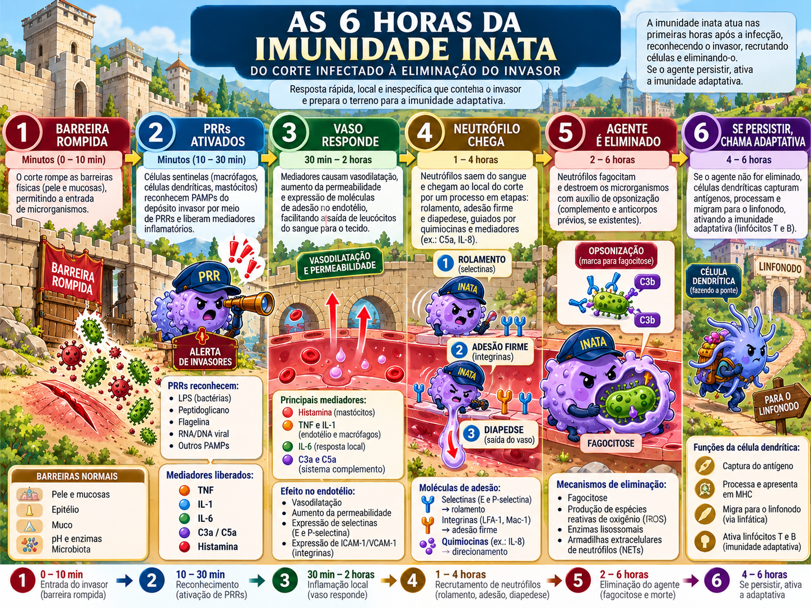
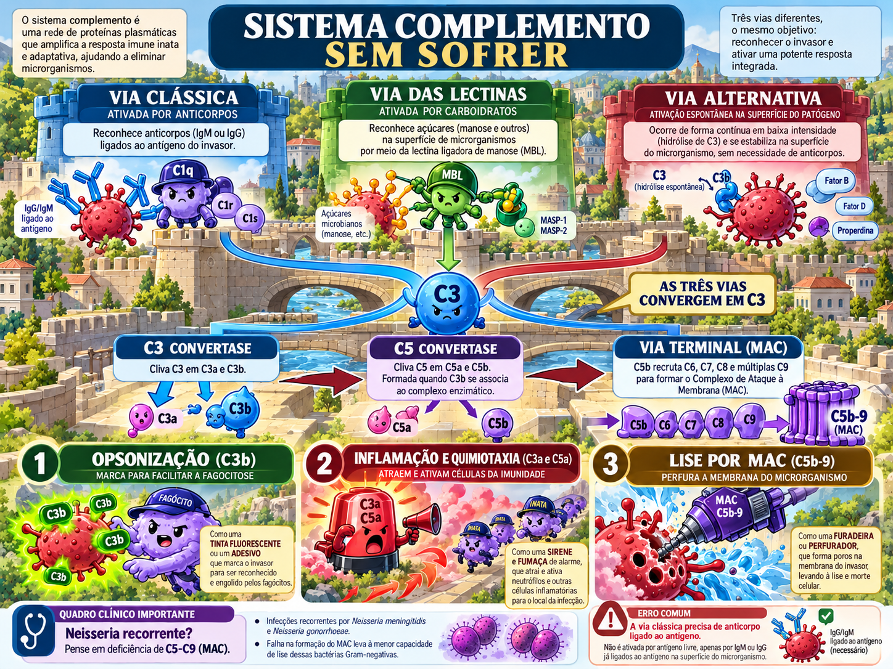
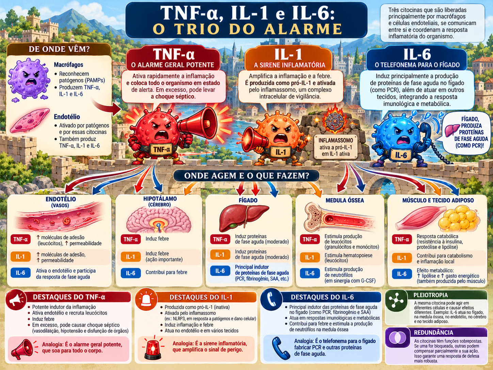

Imunidade inata
Barreiras, PRRs, inflamassomo, fagocitose, interferons, NK, complemento e citocinas — organizados como uma sequência causal.

As três tarefas da imunidade inata
Reconhecer
Sentir padrões microbianos e dano por PRRs.
Conter e eliminar
Barreiras, fagócitos, complemento, NK e mediadores.
Instruir a adaptativa
Maturação da célula dendrítica e produção de citocinas que definem o tipo de resposta T.
Barreiras epiteliais: defesa sem inflamação
Pele e mucosas não são “paredes passivas”. Junções, muco, cílios, pH, lisozima, defensinas e microbiota impedem entrada e colonização. Esse é o nível mais eficiente de defesa: resolver o problema antes que tecido e vasos precisem inflamar.
PAMPs, DAMPs e PRRs: o que exatamente é reconhecido?
PAMP é padrão associado a microrganismo; DAMP é sinal liberado por células lesadas. PRRs são os sensores. O compartimento é parte da informação.
| Família | Onde | Ideia-chave |
|---|---|---|
| TLR de superfície | Membrana | Lipídios/proteínas microbianas externos. |
| TLR endossômicos | Endossomo | Ácidos nucleicos internalizados; compartimentalização reduz autorreatividade. |
| NLR | Citosol | Sinais bacterianos/dano; alguns montam inflamassomos. |
| RLR | Citosol | RNA viral. |
| CLR | Membrana | Carboidratos de fungos e outros microrganismos. |
TLR → NF-κB: o alarme entra no núcleo
liga PRR
adaptadores/quinases
entra no núcleo
TNF, IL-1, quimiocinas, moléculas de adesão
A diferença entre neutrófilo e macrófago ajuda aqui: o macrófago depende fortemente de nova transcrição gênica para coordenar a resposta.
Inflamassomo: dupla checagem para uma citocina perigosa
Sinal 1 — priming
TLR/NF-κB induz pró-IL-1β e componentes do inflamassomo.
Sinal 2 — ativação
Dano/ATP/cristais/sinais citosólicos montam o complexo, ativam caspase-1 e clivam IL-1β/IL-18.
Fagocitose e mecanismos microbicidas
Reconhecer e engolir não basta: o fagossomo precisa fundir-se ao lisossomo e gerar um ambiente hostil. NADPH oxidase produz espécies reativas de oxigênio; macrófagos ativados podem induzir iNOS e produzir NO; neutrófilos ainda podem liberar NETs.
Interferon tipo I e NK: vírus sob vigilância
IFN tipo I
Induz estado antiviral nas células vizinhas, aumenta MHC I e ajuda a ativar NK.
NK — missing self
MHC I próprio entrega sinal inibitório. Se uma célula reduz MHC I para fugir de CD8, perde esse freio e fica mais vulnerável à NK.
Complemento: três entradas, C3 no centro, três saídas
Não pense numa fila linear. Pense numa rede que converge em C3.
Clássica
C1q liga Fc de IgM/IgG já ligadas ao antígeno.
Lectinas
MBL/ficolinas reconhecem carboidratos e usam MASPs.
Alternativa
Hidrólise espontânea de C3; fator B/D formam C3bBb; properdina estabiliza.
C3b
Opsonização.
C3a/C5a
Anafilatoxinas; C5a é forte quimiotático.
C5b-9
MAC, poro e lise.

TNF, IL-1 e IL-6: não decore como lista
TNF
Ativa endotélio, febre, inflamação sistêmica; em excesso participa de choque e caquexia.
IL-1
Febre e inflamação; depende de processamento pelo inflamassomo.
IL-6
Principal indução hepática de proteínas de fase aguda, incluindo PCR e fibrinogênio.
Pleiotropia = uma citocina, muitos alvos. Redundância = citocinas diferentes, efeitos sobrepostos. Cascata = uma induz outra.

Fechamento: as seis horas explicadas
Quando um padrão clínico aponta para um segmento estreito
Jovem com três episódios de meningite meningocócica e, fora isso, poucas infecções importantes. O defeito mais provável é: